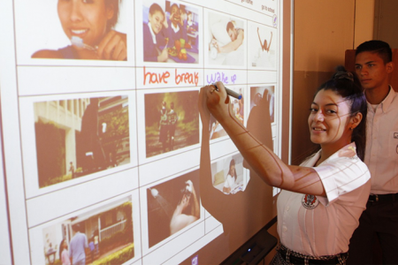
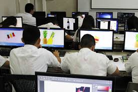
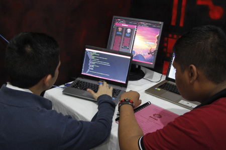
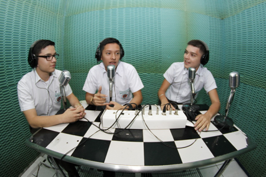
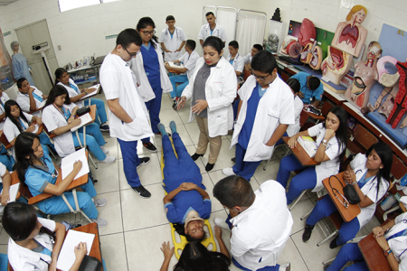

GENERALES
Diplomado en ingles
Objetivo: ofrecer una formacion de calidad en idiomas ingles y frances, para obtener un nivel profesional en el campo laboral y/o educacion superior a traves de educacion teorica-practica sustentada en el aprendizaje activo. Desarrollando en nuestros estudiantes el dominio de las cuatro habilidades macro de los idiomas ingles y frances que son: speaking (habilidad linguistica u oral), writing (gramatica y estructuracion), reading (comprension lectora), y listening (compresion auditiva) para obtener un nivel profesional proeficiente desempeño en idiomas ingles y frances.

Diplomado en diseño grafico
Objetivo: formar bachilleres capaces de realizar proyectos graficos que tengan como fin la comprension de informacion por medio de herramientas digitales, presentandolos de una manera atractiva, compacta; y que esta se traduzca en comunicacion relevante y significativa para la sociedad.

Diplomado en computacion
Objetivo: formar bachilleres enfocados al diseño, desarrollo e implementacion de sistemas informaticos; en los ambitos de hardware, software y redes informaticas, logrando adaptar las nuevas tecnologias que demanden las instituciones publicas y privadas de un enfoque humano, etico, emprendedor y con responsabilidad social.

Diplomado en comunicaciones
Objetivo: formar comunicadores en las areas videovisuales y fotografia capaces de elaborar empresas de comunicacion en los rubros de produccion y realizacion. Asi mismo brindamos las herramientas necesarias para emprender su propia empresa de comunicacion.
Diplomado en salud
Objetivo: formar bachilleres competentes en el area de salud, con conocimientos sobre antropometria, inyectables y primeros auxilios, para fomentar la promocion, prevencion y humanismo como pilares para desempeñarse con calidad en cualquier rama de la salud.
Diplomado en hosteleria y turismo
Objetivo: formar bachilleres capaces de planificar, organizar y supervisar eventos: sociales, empresariales, y corporativos conociendo cada uno de los pasos para el desarrollo de estos, conocimientos en montaje de mesa, etiqueta y protocolo, servivio de atencion al cliente, guias para atender grupos turisticos nacionales e internacionales capacitados en la manipulacion de alimentos y bebidas.
Diplomado en gastronomia
Objetivo: formar bachilleres competentes para planificar, organizar, ejecutar y supervisar dentro del sector gastronomico las actividades de cocina, panaderia y oasteleria, generadores de proyectos y emprendedurismo en el sector Gastronomico.